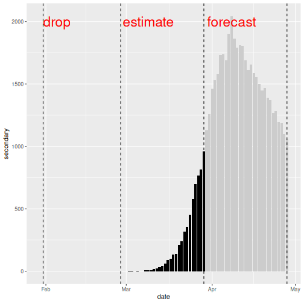
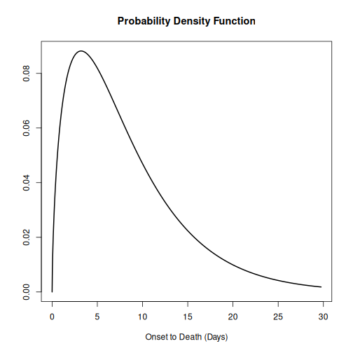
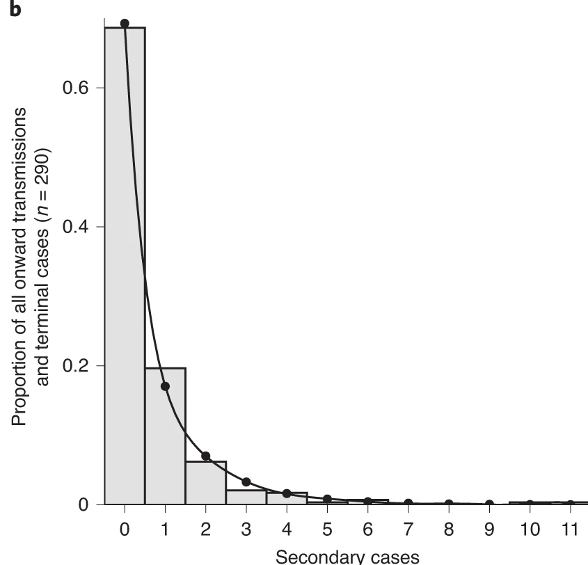
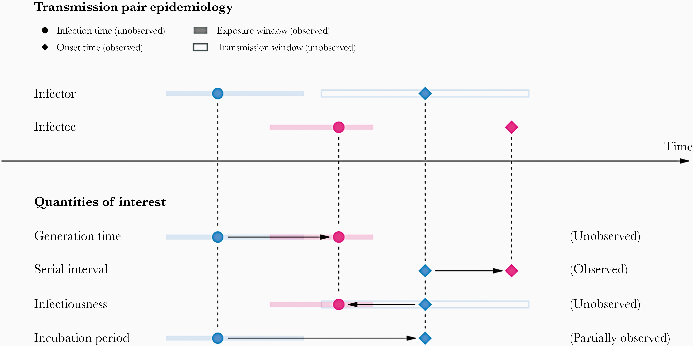
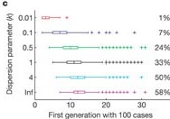

Image 1 of 1: ‘Distribution of secondary cases (deaths). We will drop the first 30 days with no observed deaths. We will use the deaths between day 31 and day 60 to estimate the secondary observations. We will forecast deaths from day 61 to day 90.’

Distribution of secondary cases (deaths). We will drop the first 30 days
with no observed deaths. We will use the deaths between day 31 and day
60 to estimate the secondary observations. We will forecast deaths from
day 61 to day 90.
Image 1 of 1: ‘The horizontal axis is the scaled measure of clinical severity, ranging from 1 to 7, where 1 is low, 4 is moderate, and 7 is very severe. The vertical axis is the scaled measure of transmissibility, ranging from 1 to 5, where 1 is low, 3 is moderate, and 5 is highly transmissible. On the graph, HHS pandemic planning scenarios are labeled across four quadrants (A, B, C and D). From left to right, the scenarios are “seasonal range,” “moderate pandemic,” “severe pandemic” and “very severe pandemic.” As clinical severity increases along the horizontal axis, or as transmissibility increases along the vertical axis, the severity of the pandemic planning scenario also increases.’
HHS Pandemic Planning Scenarios based on the
Pandemic Severity Assessment Framework. This uses a combined measure of
clinical severity and transmissibility to characterise influenza
pandemic scenarios. HHS: United States Department of
Health and Human Services (CDC,
2016).
Figure 2
Image 1 of 1: ‘The periods are relevant: Period 1 -- 15 days where CFR is zero to indicate this is due to no reported deaths; Period from Mar 15 -- Apr 26 where CFR appears to be rising; Period Apr 30 -- May 30 where the CFR estimate stabilises.’
Observed biased confirmed case fatality risk
(CFR) estimates as a function of time (thick line) calculated as the
cumulative number of deaths over confirmed cases at time t. The estimate
at the end of an outbreak (~May 30) is the realised CFR by the end of
the epidemic. The horizontal continuous line and dotted lines show the
expected value and the 95% confidence intervals (\(95\%\) CI) of the predicted delay-adjusted
CFR estimate only by using the observed data until 27 Mar 2003 (Nishiura
et al., 2009)
Figure 3
Image 1 of 1: ‘Spectrum of COVID-19 cases. The CFR aims to estimate the proportion of Deaths among confirmed cases in an epidemic. (Verity et al., 2020)’
Spectrum of COVID-19 cases. The CFR aims to
estimate the proportion of Deaths among confirmed cases in an epidemic.
(Verity
et al., 2020)
Figure 4

Figure 5
Figure 6
Image 1 of 1: ‘Observed (biased) confirmed case fatality risk of severe acute respiratory syndrome (SARS) in Hong Kong, 2003. (Nishiura et al., 2009)’
Observed (biased) confirmed case fatality risk
of severe acute respiratory syndrome (SARS) in Hong Kong, 2003. (Nishiura
et al., 2009)
Figure 7
Image 1 of 1: ‘Early determination of the delay-adjusted confirmed case fatality risk of severe acute respiratory syndrome (SARS) in Hong Kong, 2003. (Nishiura et al., 2009)’
Early determination of the delay-adjusted
confirmed case fatality risk of severe acute respiratory syndrome (SARS)
in Hong Kong, 2003. (Nishiura
et al., 2009)
Figure 8
Image 1 of 1: ‘The population of confirmed cases and sampling process for estimating the unbiased CFR during the course of an outbreak. (Nishiura et al., 2009)’
The population of confirmed cases and sampling
process for estimating the unbiased CFR during the course of an
outbreak. (Nishiura et
al., 2009)
Figure 9
Image 1 of 1: ‘Severity levels of infections with SARS-CoV-2 and parameters of interest. Each level is assumed to be a subset of the level below.’
Severity levels of infections with SARS-CoV-2
and parameters of interest. Each level is assumed to be a subset of the
level below.
Figure 10
Image 1 of 1: ‘Data source of COVID-19 cases in Wuhan: D1) 32,583 laboratory-confirmed COVID-19 cases as of March 84, D2) 17,365 clinically-diagnosed COVID-19 cases during February 9–194, D3)daily number of laboratory-confirmed cases on March 9–April 243, D4) total number of COVID-19 deaths as of April 24 obtained from the Hubei Health Commission3, D5) 325 laboratory-confirmed cases and D6) 1290 deaths were added as of April 16 through a comprehensive and systematic verification by Wuhan Authorities3, and D7) 16,781 laboratory-confirmed cases identified through universal screening10,11. Pse: RT-PCR sensitivity12. Pmed.care: proportion of seeking medical assistance among patients suffering from acute respiratory infections13.’
Schematic diagram of the baseline analyses. Red,
blue, and green arrows denote the data flow from laboratory-confirmed
cases of passive surveillance, clinically-diagnosed cases, and
laboratory-confirmed cases of active screenings.
Image 1 of 1: ‘Chains of SARS-CoV-2 transmission in Hong Kong initiated by local or imported cases. (a), Transmission network of a cluster of cases traced back to a collection of four bars across Hong Kong (n = 106). (b), Transmission network associated with a wedding without clear infector–infectee pairs but linked back to a preceding social gathering and local source (n = 22). (c), Transmission network associated with a temple cluster of undetermined source (n = 19). (d), All other clusters of SARS-CoV-2 infections where the source and transmission chain could be determined (Adam et al., 2020).’
Chains of SARS-CoV-2 transmission in
Hong Kong initiated by local or imported cases.
(a), Transmission network of a cluster of cases traced
back to a collection of four bars across Hong Kong (n = 106).
(b), Transmission network associated with a wedding
without clear infector–infectee pairs but linked back to a preceding
social gathering and local source (n = 22). (c),
Transmission network associated with a temple cluster of undetermined
source (n = 19). (d), All other clusters of SARS-CoV-2
infections where the source and transmission chain could be determined
(Adam et
al., 2020).
Figure 2
Image 1 of 1: ‘R = 0.58 and k = 0.43.’

Observed offspring distribution of
SARS-CoV-2 transmission in Hong Kong. N = 91 SARS-CoV-2
infectors, N = 153 terminal infectees and N = 46 sporadic local cases.
Histogram bars indicate the proportion of onward transmission per amount
of secondary cases. Line corresponds to a fitted negative binomial
distribution (Adam et al.,
2020).
Figure 3
Figure 4
Figure 5
Figure 6
Figure 7
Figure 8
Image 1 of 1: ‘Evidence for variation in individual reproductive number. (Left, c) Proportion of transmission expected from the most infectious 20% of cases, for 10 outbreak or surveillance data sets (triangles). Dashed lines show proportions expected under the 20/80 rule (top) and homogeneity (bottom). (Right, d), Reported superspreading events (SSEs; diamonds) relative to estimated reproductive number R (squares) for twelve directly transmitted infections. Crosses show the 99th-percentile proposed as threshold for SSEs. (More figure details in Lloyd-Smith et al., 2005)’
Evidence for variation in individual
reproductive number. (Left, c) Proportion of transmission
expected from the most infectious 20% of cases, for 10 outbreak or
surveillance data sets (triangles). Dashed lines show proportions
expected under the 20/80 rule (top) and homogeneity (bottom). (Right,
d), Reported superspreading events (SSEs; diamonds) relative to
estimated reproductive number R (squares) for twelve directly
transmitted infections. Crosses show the 99th-percentile proposed as
threshold for SSEs. (More figure details in Lloyd-Smith et al.,
2005)
Figure 9
Image 1 of 1: ‘Schematic representation of contact tracing strategies. Black arrows indicate the directions of transmission, blue and Orange arrows, a successful or failed contact tracing, respectivelly. When there is evidence of individual-level variation in transmission, often resulting in superspreading, backward contact tracing from the index case (blue circle) increase the probability to find the primary case (green circle) or clusters with a larger fraction of cases, potentially increasing the number of quarentined cases (yellow circles). Claire Blackmore, 2021’
Schematic representation of contact tracing
strategies. Black arrows indicate the directions of transmission, blue
and Orange arrows, a successful or failed contact tracing,
respectivelly. When there is evidence of individual-level variation in
transmission, often resulting in superspreading, backward contact
tracing from the index case (blue circle) increase the probability to
find the primary case (green circle) or clusters with a larger fraction
of cases, potentially increasing the number of quarentined cases (yellow
circles). Claire
Blackmore, 2021
Figure 10
Image 1 of 1: ‘Reported superspreading events (SSEs; diamonds) relative to estimated reproduction number R (squares) for twelve directly transmitted infections. Lines show 5–95 percentile range of the number of secondary cases following a Poisson distribution with lambda equal to the reproduction number (Z∼Poisson(R)), and crosses show the 99th-percentile proposed as threshold for SSEs. Stars represent SSEs caused by more than one source case. ‘Other’ diseases are: 1, Streptococcus group A; 2, Lassa fever; 3, Mycoplasma pneumonia; 4, pneumonic plague; 5, tuberculosis. R is not shown for ‘other’ diseases, and is off-scale for monkeypox.’
Reported superspreading events (SSEs; diamonds)
relative to estimated reproduction number R (squares) for twelve
directly transmitted infections. Lines show 5–95 percentile range of the
number of secondary cases following a Poisson distribution with lambda
equal to the reproduction number (\(Z∼Poisson(R)\)), and crosses show the
99th-percentile proposed as threshold for SSEs. Stars represent SSEs
caused by more than one source case. ‘Other’ diseases are: 1,
Streptococcus group A; 2, Lassa fever; 3, Mycoplasma pneumonia; 4,
pneumonic plague; 5, tuberculosis. R is not shown for ‘other’ diseases,
and is off-scale for monkeypox.
Image 1 of 1: ‘Observed number of cumulative cases from the Middle East respiratory syndrome (MERS) outbreak in South Korea, 2015, alongside with simulated transmission chains assuming an offspring distribution with $R=0.6$ and $k=0.02$.’
Observed number of cumulative cases from the Middle East respiratory
syndrome (MERS) outbreak in South Korea, 2015, alongside with simulated
transmission chains assuming an offspring distribution with \(R=0.6\) and \(k=0.02\).
Figure 2
Image 1 of 1: ‘An example of a transmission chain starting with a single case C1. Cases are represented by blue circles and arrows indicating who infected whom. The chain grows through generations Gen 1, Gen 2, and Gen 3, producing cases C2, C3, C4, C5, and C6. The chain ends at generation Gen 3 with cases C4, C5, and C6. The size of C1’s chain is 6, including C1 (that is, the sum of all blue circles), and the length is 3, which includes Gen 1 (maximum number of generations reached by C1’s chain) (Azam & Funk, 2024).’
An example of a transmission chain
starting with a single case C1. Cases are represented by blue
circles and arrows indicating who infected whom. The chain grows through
generations Gen 1, Gen 2, and Gen 3, producing cases C2, C3, C4, C5, and
C6. The chain ends at generation Gen 3 with cases C4, C5, and C6. The
size of C1’s chain is 6, including C1 (that is, the sum of all blue
circles), and the length is 3, which includes Gen 1 (maximum number of
generations reached by C1’s chain) (Azam
& Funk, 2024).
Figure 3
Image 1 of 1: ‘A schematic of the relationship of different time periods of transmission between an infector and an infectee in a transmission pair. Exposure window is defined as the time interval having viral exposure, and transmission window is defined as the time interval for onward transmission with respect to the infection time (Chung Lau et al., 2021).’

A schematic of the relationship of different
time periods of transmission between an infector and an infectee in a
transmission pair. Exposure window is defined as the time interval
having viral exposure, and transmission window is defined as the time
interval for onward transmission with respect to the infection time (Chung
Lau et al., 2021).
Figure 4
Figure 5
Figure 6
Figure 7
Figure 8
Image 1 of 1: ‘Growth of simulated outbreaks with R = 1.5 and one initial case, conditional on non-extinction. Boxes show the median and interquartile range (IQR) of the first disease generation with 100 cases; whiskers show the most extreme values within 1.5 × IQR of the boxes, and crosses show outliers. Percentages show the proportion of 10,000 simulated outbreaks that reached the 100-case threshold (Lloyd-Smith et al., 2005).’

Growth of simulated outbreaks with R =
1.5 and one initial case, conditional on non-extinction. Boxes
show the median and interquartile range (IQR) of the first disease
generation with 100 cases; whiskers show the most extreme values within
1.5 × IQR of the boxes, and crosses show outliers. Percentages show the
proportion of 10,000 simulated outbreaks that reached the 100-case
threshold (Lloyd-Smith et al.,
2005).
![The horizontal axis is the scaled measure of clinical severity, ranging from 1 to 7, where 1 is low, 4 is moderate, and 7 is very severe. The vertical axis is the scaled measure of transmissibility, ranging from 1 to 5, where 1 is low, 3 is moderate, and 5 is highly transmissible. On the graph, HHS pandemic planning scenarios are labeled across four quadrants (A, B, C and D). From left to right, the scenarios are “seasonal range,” “moderate pandemic,” “severe pandemic” and “very severe pandemic.” As clinical severity increases along the horizontal axis, or as transmissibility increases along the vertical axis, the severity of the pandemic planning scenario also increases.](../fig/cfr-hhs-scenarios-psaf.png)


![Data source of COVID-19 cases in Wuhan: D1) 32,583 laboratory-confirmed COVID-19 cases as of March 84, D2) 17,365 clinically-diagnosed COVID-19 cases during February 9–194, D3)daily number of laboratory-confirmed cases on March 9–April 243, D4) total number of COVID-19 deaths as of April 24 obtained from the Hubei Health Commission3, D5) 325 laboratory-confirmed cases and D6) 1290 deaths were added as of April 16 through a comprehensive and systematic verification by Wuhan Authorities3, and D7) 16,781 laboratory-confirmed cases identified through universal screening10,11. Pse: RT-PCR sensitivity12. Pmed.care: proportion of seeking medical assistance among patients suffering from acute respiratory infections13.](../fig/cfr-s41467-020-19238-2-fig_b.png)
![Chains of SARS-CoV-2 transmission in Hong Kong initiated by local or imported cases. (a), Transmission network of a cluster of cases traced back to a collection of four bars across Hong Kong (n = 106). (b), Transmission network associated with a wedding without clear infector–infectee pairs but linked back to a preceding social gathering and local source (n = 22). (c), Transmission network associated with a temple cluster of undetermined source (n = 19). (d), All other clusters of SARS-CoV-2 infections where the source and transmission chain could be determined (Adam et al., 2020).](../fig/see-intro-superspreading.png)


![Evidence for variation in individual reproductive number. (Left, c) Proportion of transmission expected from the most infectious 20% of cases, for 10 outbreak or surveillance data sets (triangles). Dashed lines show proportions expected under the 20/80 rule (top) and homogeneity (bottom). (Right, d), Reported superspreading events (SSEs; diamonds) relative to estimated reproductive number R (squares) for twelve directly transmitted infections. Crosses show the 99th-percentile proposed as threshold for SSEs. (More figure details in Lloyd-Smith et al., 2005)](../fig/SEE-individual-reproductive-number-fig-c-d.png)
![Schematic representation of contact tracing strategies. Black arrows indicate the directions of transmission, blue and Orange arrows, a successful or failed contact tracing, respectivelly. When there is evidence of individual-level variation in transmission, often resulting in superspreading, backward contact tracing from the index case (blue circle) increase the probability to find the primary case (green circle) or clusters with a larger fraction of cases, potentially increasing the number of quarentined cases (yellow circles). Claire Blackmore, 2021](../fig/contact-tracing-strategies.png)
![Reported superspreading events (SSEs; diamonds) relative to estimated reproduction number R (squares) for twelve directly transmitted infections. Lines show 5–95 percentile range of the number of secondary cases following a Poisson distribution with lambda equal to the reproduction number (Z∼Poisson(R)), and crosses show the 99th-percentile proposed as threshold for SSEs. Stars represent SSEs caused by more than one source case. ‘Other’ diseases are: 1, Streptococcus group A; 2, Lassa fever; 3, Mycoplasma pneumonia; 4, pneumonic plague; 5, tuberculosis. R is not shown for ‘other’ diseases, and is off-scale for monkeypox.](../fig/SEE-individual-reproductive-number-fig-d.png)

![An example of a transmission chain starting with a single case C1. Cases are represented by blue circles and arrows indicating who infected whom. The chain grows through generations Gen 1, Gen 2, and Gen 3, producing cases C2, C3, C4, C5, and C6. The chain ends at generation Gen 3 with cases C4, C5, and C6. The size of C1’s chain is 6, including C1 (that is, the sum of all blue circles), and the length is 3, which includes Gen 1 (maximum number of generations reached by C1’s chain) (Azam & Funk, 2024).](https://raw.githubusercontent.com/epiverse-trace/epichains/main/vignettes/img/transmission_chain_example.png)